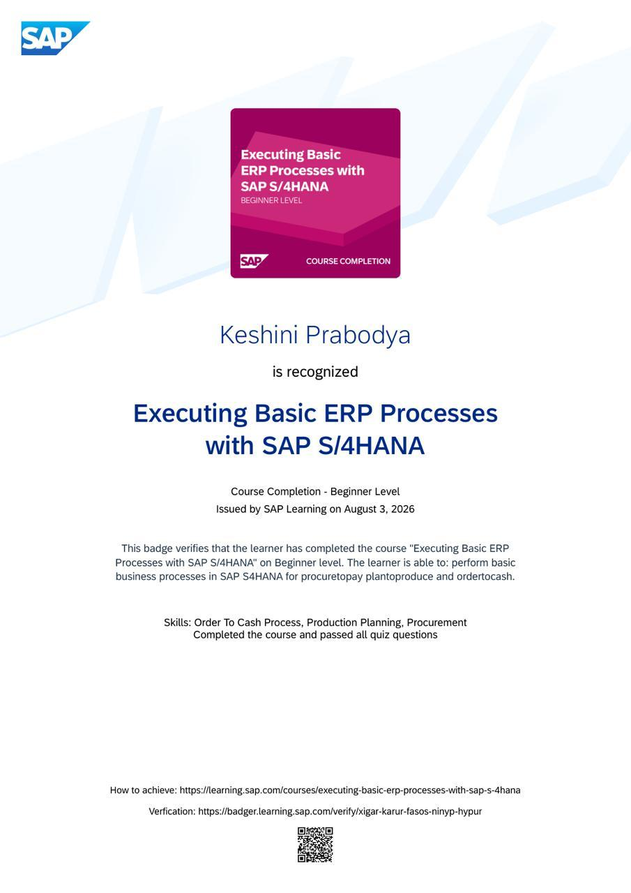

SAP Learning
Executing Basic ERP Processes with SAP S/4HANA
Hands-on beginner-level course covering core ERP business processes in SAP S/4HANA — procure-to-pay, plan-to-produce, and order-to-cash — directly relevant to ERP consulting work.
Issued August 2026